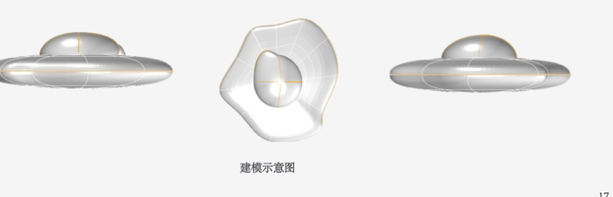

背景
走在汕头大学的路上，一股地热气从脚直通头顶，炎热的地面犹如铁板烧。 汕头那么热，为什么不来颗铁板烧蛋呢？
大地色中出现几颗煎熟了的鸡蛋，一眼望去令人产生疑问：那一抹白色是什么？走近瞧瞧。 用「不合时宜」制造好奇心，是这件作品最主要的手法。
作品的位置处于学校食堂旁，非常应景。周围人流量大，年龄范围广， 更加能直接反映作品给大众带来积极反馈；同时趣味表达增强了互动性，为校园营造轻松的氛围。

构想
根据烹饪经验，鸡蛋在大约 50 度左右就会稍稍凝固——在汕头这样炎热的天气里， 这一点既符合了作品的合理性，也放大了它的趣味性。
为什么是煎蛋
地面烫得像铁板，铁板上就该有蛋。场所的体感直接给出了形式。
为什么放在食堂旁
食堂是高人流、全年龄的节点，作品能最快接收到最多的反应。
为什么做这么大
尺度一旦脱离日常，荒诞感才成立；小尺寸只会变成装饰小品。
这件作品本质上是一次关于场所体感的转译： 把「热」从一种身体感受，变成一个可以被看见、被走近、被拍照的物体。 观众的第一反应通常是疑惑，第二反应是笑——这两个反应正是作品要的。

制作
媒介为 PVC：轻、可移动、耐候，适合校园内短期展出。 制作前先做三维建模，推敲蛋清边缘的厚度与蛋黄隆起的弧度。

造型要点
蛋清不能做成标准圆——真实的煎蛋边缘总是厚薄不均、带一点焦边。 所以外轮廓故意做了几处不规则的凸起，让它在草地上更像「发生的事」，而不是「摆出来的东西」。
现场关系
装置不放底座、不设围栏，人可以走近、可以坐、可以合影。 没有说明牌的介入，观众的疑问会多停留几秒——这几秒就是作品的有效时间。
结果
第七届南方「公共艺术节」
创意作品奖 · 2022
汕头大学 · 食堂旁草地
高人流、全年龄节点，展出期间互动频繁
收录于个人作品集
《Personal Portfolio 2024》第 16—17 页